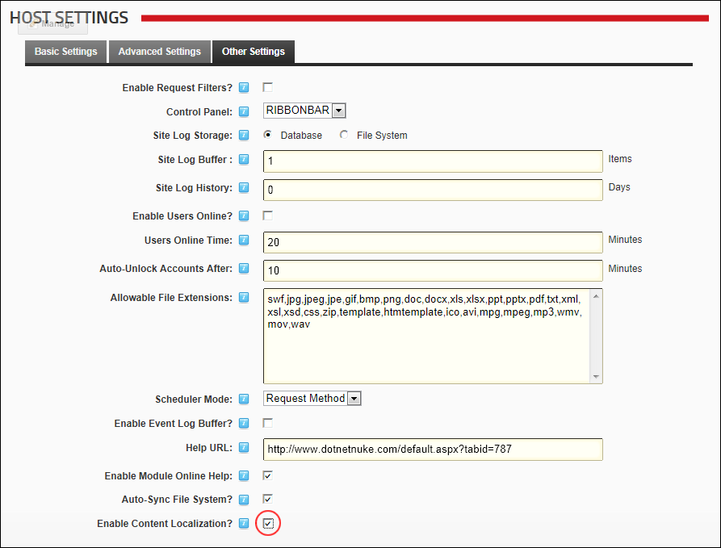
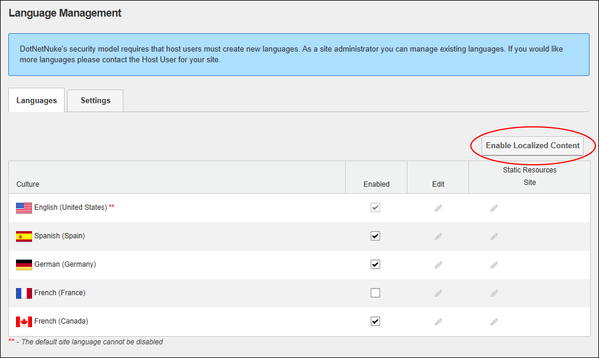

- Mark
 the check box to allow content localization.
the check box to allow content localization. - Unmark
 the check box to disable content localization and return the site to the default "en-us" (US English) setting. This is the default setting.
the check box to disable content localization and return the site to the default "en-us" (US English) setting. This is the default setting.
How to allow or disallow content localization to be created for sites within this DNN installation. Allowing content localization permits Administrators to enable and configure content localization on their site.


Related Topics: